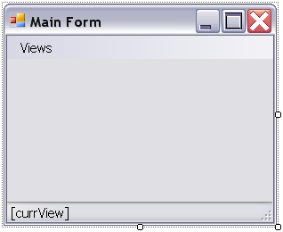
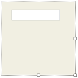
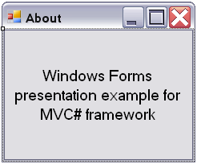

Using the Windows Forms views engine in MVC# framework
The source code of this example can be found under "Examples\WindowsFormsExample\"
subfolder
of the MVC# root folder.
Introduction
MDI Parent form view
Main task structure
MDI Child views
User control views
Notifications to views
Modal Dialog form
Starting the application
Summary
Introduction
The Views part of the Model-View-Presenter triad may be implemented differently
for different presentation mechanisms. Each presentation platform (Web forms, Windows
forms, WPF) implies its own set of possible views, own rules for views activation
and, overall, own presentation specifics.
This tutorial covers the .NET Windows Forms presentation facilities in MVC# framework.
We will walk through all kinds of views offered by the Windows Forms views engine,
and will demonstrate how to use them.
MDI Parent form view
The main form for our example application will be an MDI parent form. It will have a
menu to select views and a status bar to show the name of the current view.

For the main form to act as a view it should implement the IView interface and should
be equipped with the [WinformsView] attribute. We could implement the IView interface
ourselves, however the framework already provides base implementations to inherit
from, thus we would inherit the MainForm class from the WinFormView base class.
[WinformsView(typeof(MainTask), "Main View", IsMdiParent = true)]
public partial class MainForm : WinFormView
{
public MainForm() { InitializeComponent(); }
}
In the [WinformsView] we have specified "IsMdiParent = true" to make the framework
treat that view as an MDI parent.
Main task structure
The MainTask mentioned above describes the only task in our application. For the
simplicity sake it will allow navigations between any interaction points it declares.
This is done by setting the IsCommonTarget named parameter to "true", which makes an interaction
point accessible from any other point.
public class MainTask : TaskBase
{
[IPoint(typeof(MainViewController), IsCommonTarget = true)]
public const string MainView = "Main View";
[IPoint(typeof(ControllerBase), IsCommonTarget = true)]
public const string MdiChild1 = "Mdi Child1";
[IPoint(typeof(ControllerBase), IsCommonTarget = true)]
public const string MdiChild2 = "Mdi Child2";
[IPoint(typeof(ControllerBase), IsCommonTarget = true)]
public const string UserControlView1 = "UserControlView1";
[IPoint(typeof(ControllerBase), IsCommonTarget = true)]
public const string UserControlView2 = "UserControlView2";
[IPoint(typeof(ControllerBase), IsCommonTarget = true)]
public const string AboutDlgView = "About Dlg View";
}
As can be seen above besides the main view there will be five more views: two MDI
child views, two user control views (inside each MDI child) and an "About" dialog
view.
MainViewController watches the change of the current view and tells the main view
to update the corresponding label in the status bar. The MainViewController class
also handles messages from the main view when a user selects another view in the
menu. The CommonController class is empty since the rest part of the application
contains only presentation logic.
Here we do not list the code for MainViewController and CommonController, as in
this tutorial we concern mainly presentation issues, not application logic. Yet
you may see this code in the working example project.
MDI Child views
Let us create a new form class. Make it a descendant of the WinFormView class (in
order not to implement IView ourselves). We will use this form class for both "Mdi Child1" and "Mdi Child2"
views. In the [WinformsView] attributes we specify the MdiParent property pointing
to the "MainView":
[WinformsView(typeof(MainTask), "Mdi Child1", MdiParent = "Main View")]
[WinformsView(typeof(MainTask), "Mdi Child2", MdiParent = "Main View")]
public partial class MdiChildView : WinFormView
{
public MdiChildView()
{
InitializeComponent();
}
}
User control views
Now create a new user control class. Make it descend from the WinUserControlView
class. Then place a text box on it in the visual designer.
public partial class UserControlView : WinUserControlView
{
public UserControlView()
{
InitializeComponent();
}
}

Now compile the project and place an instance of the UserControlView control on
the MdiChildView form via the form designer. Also place a text box on the MdiChildView
form.

When the system (the views manager, to be exact) finds a user control view it retrieves
its ViewName property to know which interaction point it corresponds to. That is
why we should correctly assign the ViewName property to the user control views.
We will do this in the Initialize() method of the MDI child views. If an MDI child
has "Mdi Child1" ViewName value then the inner user control view should be named
"UserControlView1", for MDI child with the ViewName equal to "Mdi Child2" the inner
user control view should be named "UserControlView2".
public partial class MdiChildView : WinFormView
{
...
public override void Initialize()
{
if (ViewName == "Mdi Child1")
userControlView.ViewName = "UserControlView1";
else if (ViewName == "Mdi Child2")
userControlView.ViewName = "UserControlView2";
}
}
Notifications to views
Above we have already handled the Initialize() method of the MDI child views. Let
us also assign the form caption text in this method:
public override void Initialize()
{
...
Text = ViewName;
}
In the Activate(...) method we will write to the text box whether the view is active
or not:
public override void Activate(bool activate)
{
textBox.Text = activate ? "Active" : "Inactive";
}
Modal Dialog form
The last view we need to design is the About dialog view. Create a new form as shown
below:

Again it will inherit from the WinFormView class and will have the [WinformsView]
attribute. In the [WinformsView] attribute we specify "ShowModal = true" to make
the view displayed as a modal dialog:
[WinformsView(typeof(MainTask), "About Dlg View", ShowModal = true)]
public partial class AboutDialog : WinFormView
{
public AboutDialog()
{
InitializeComponent();
}
}
Starting the application
Starting an MVC#-based application means starting some task. Here we would start
the main task. The main tasks takes on itself navigation to the starting view:
public class MainTask : TaskBase
...
public override void OnStart(object param)
{
Navigator.NavigateDirectly("Main View");
}
But before starting any task we need to prepare a configuration object which includes
information on the types of views manager, task info provider and so on. Fortunately
the WinformsViewsManager class provides a static method to obtain a configuration
object tailored for the Windows Forms views engine:
static void Main()
{
MVCConfiguration config = WinformsViewsManager.GetDefaultConfig();
(new TasksManager(config)).StartTask(typeof(MainTask));
Application.Run(Application.OpenForms[0]);
}
Summary
We have shown how to use the Windows Forms presentation mechanism in MVC# applications.
Different kinds of views and their features were covered for you to make the best
of the Windows Forms views engine within the MVC# framework.
The source code of this example can be found under "Examples\WindowsFormsExample\" subfolder
of the MVC# root folder.